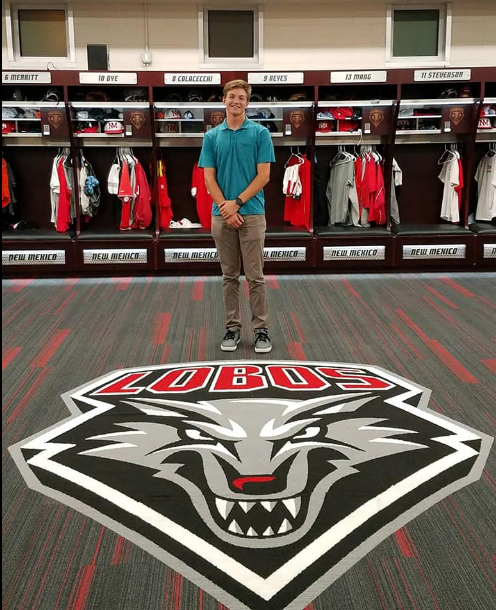

This is my about me page!
Hi, I'm Luke McCollough. I am a snior at CHS, I love to play baseball, spend time with my friends, and watch NBA basketball. I was born in Las Vegas, Nevada on October 6, 2000. I moved to Coronado in 2012. I live with my Dad, Mom, and sister. My brother is a sophomore in college at Cal Poly SLO. I am committed to play division one baseball at the University of New Mexico, which is where I will be attending for college. #GoLobos
